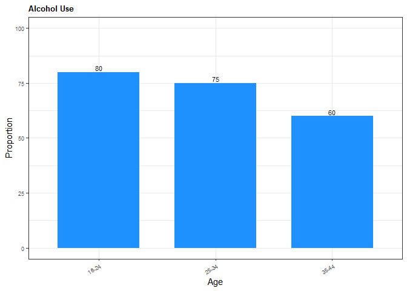
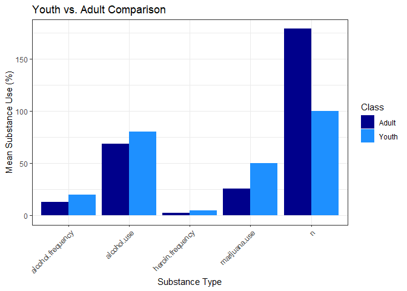

The goal of pkg.drugage is to provide functions to streamline the creation of data classification models. This package was originally developed with the intention of creating a classificiation model able to categorize data into youth vs. adult groups based on the trend of drug use/frequency, but its functions can be applied to any similar scenario.
Ecosystem Context
In the R ecosystem, pkg.drugage complements existing packages such as:
-
tidymodels: Whiletidymodelsoffers a comprehensive framework for modeling,pkg.drugageprovides convenience functions specifically tailored for classification workflows, including pre-processing steps and visualization helpers. -
caret: Similar tocaret,pkg.drugagesupports training and evaluating models, but focuses more narrowly on binary classification use cases and integrates more tightly with age-group classification logic. -
janitorandskimr: These offer data cleaning and summary tools, whilepkg.drugageincludes domain-specific cleaning for age-group classification in addition to generalized preprocessing.
Unlike broader frameworks, pkg.drugage prioritizes accessibility, domain focus, and end-to-end reproducibility for education and research scenarios.
Functions
-
download_data: Downloads a file from a given URL and saves it to a specified destination. -
create_directory: Checks if the specified directory exists, and creates the directory path if necessary. -
data_cleaning: Cleans the dataset, classifies individuals into age groups and saves the cleaned dataset to a given path. -
eda_functions: Performs exploratory data analysis (EDA) on the cleaned dataset, such as creating bar and scatter plots to visualize the raw data. -
train_and_predict: Takes a model specification and a recipe, fits the model on the training data, and returns class predictions on the testing data. -
create_confusion_matrix: Takes model predictions, generates a confusion matrix and saves it as a PNG figure and as a CSV table in the specified output directory. Returns the ggplot object used to create the plot.
Dependencies
R Dependencies
-
docopt: 0.7.1 -
dplyr: 1.1.4 -
parsnip: 1.3.1 -
pointblank: 0.12.2 -
readr: 2.1.5 -
recipes: 1.1.1 -
rsample: 1.2.1 -
tidyr: 1.3.1 -
workflows: 1.2.0
These dependencies will be automatically installed when running pak::pak("DSCI-310-2025/pkg.drugage") to install the package.
Installation
You can install the development version of pkg.drugage from GitHub with:
install.packages("pak")
pak::pak("DSCI-310-2025/pkg.drugage")Then load the package:
Example
The following is a basic example which shows you how to use some of the functions:
library(pkg.drugage)
# create sample data
sample_data <- data.frame(
age = c("18-24", "25-34", "35-44"),
alcohol.use = c(80, 75, 60),
alcohol.frequency = c(20, 15, 10),
marijuana.use = c(50, 30, 20),
heroin.frequency = c(5, 3, 2),
class = c("youth", "adult", "adult"),
n = c(100, 200, 150))
# Clean data
cleaned_data <- clean_drug_use_data(sample_data)
classified_data <- classify_age_group(cleaned_data)
head(classified_data)
#> age alcohol.use alcohol.frequency marijuana.use heroin.frequency class n
#> 1 18-24 80 20 50 5 adult 100
#> 2 25-34 75 15 30 3 adult 200
#> 3 35-44 60 10 20 2 adult 150
# EDA
create_bar_use_plot(
sample_data,
"age",
"alcohol.use",
"Alcohol Use",
"Age",
"Proportion",
"dodgerblue",
"man/figures/README-test1.png")
sample_aggregated <- aggregate_data(sample_data)
create_grouped_bar_plot(
sample_aggregated,
"Youth vs. Adult Comparison",
"Substance Type",
"Mean Substance Use (%)",
"man/figures/README-test6.png"
)
Code of Conduct
Please note that pkg.drugage is released with a Code of Conduct. By contributing to this project, you agree to abide by its terms.
Licenses
This project is dual-licensed under the following:
Creative Commons Zero v1.0 Universal (CC0 1.0) You can copy, modify, distribute and perform the work, even for commercial purposes, all without asking permission.
MIT License
A short and permissive software license. You can use it in proprietary software provided that all copies include the license terms and the copyright notice.